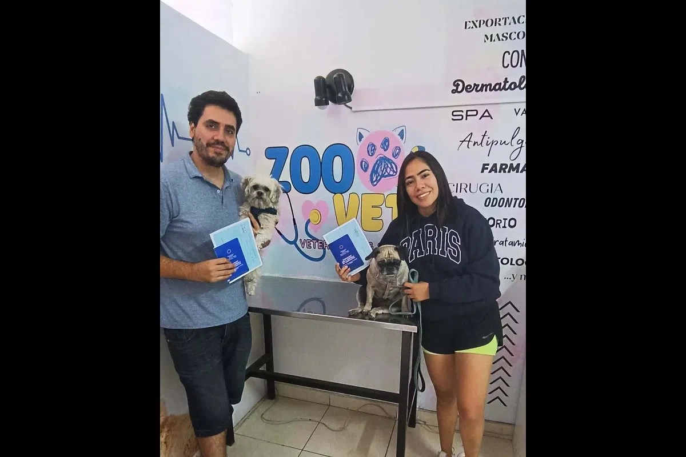
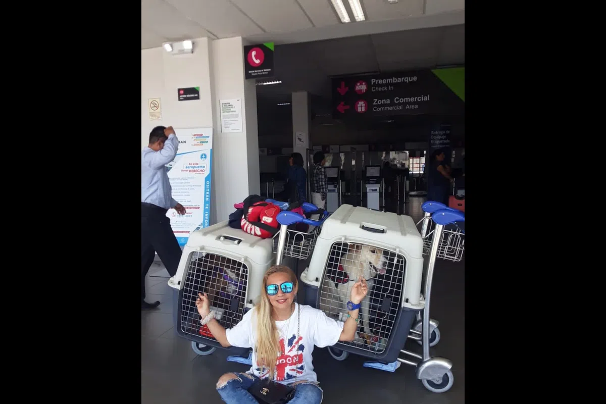
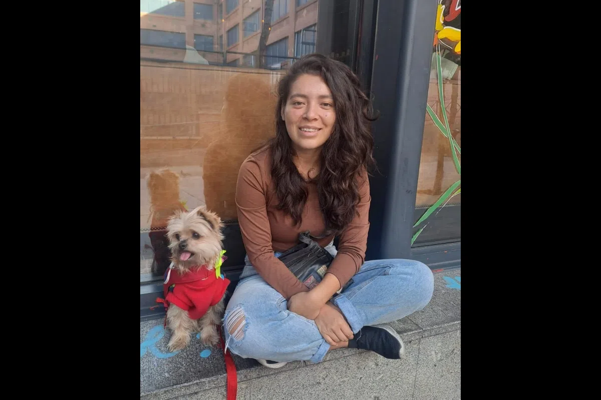
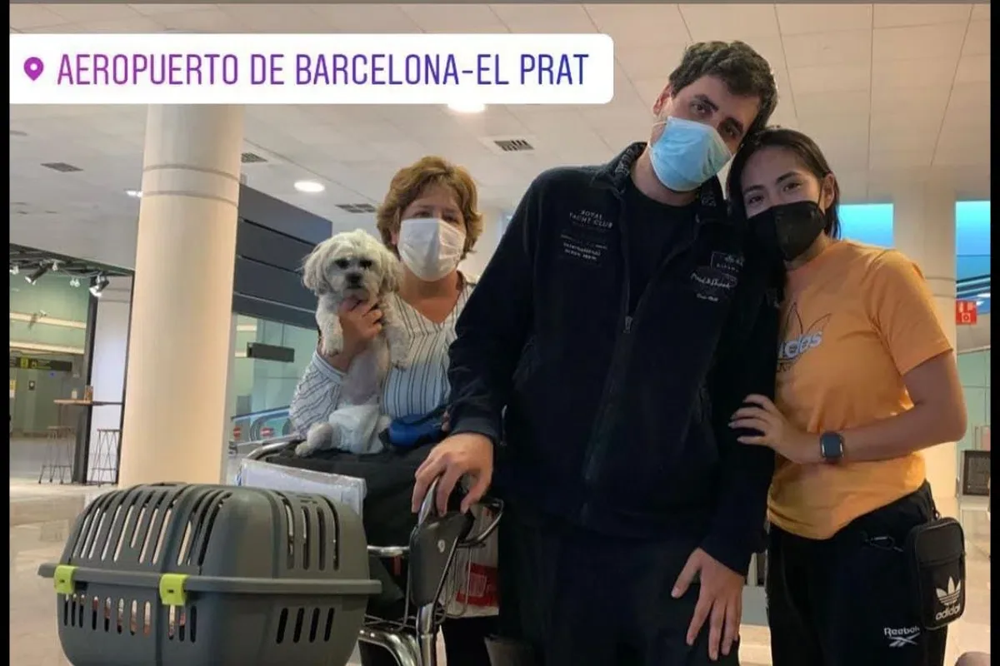
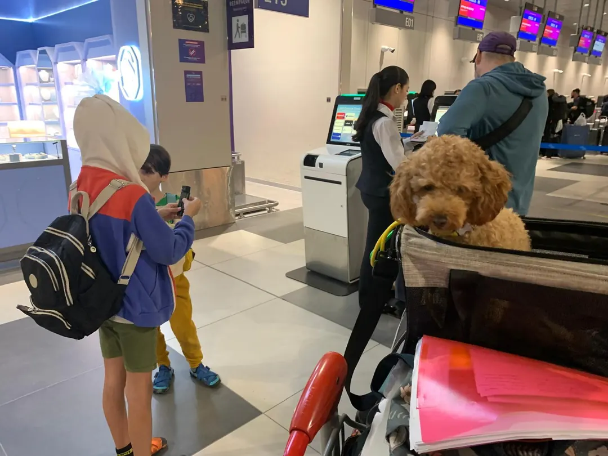
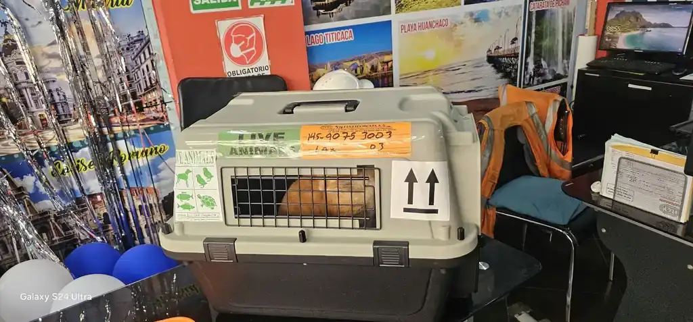
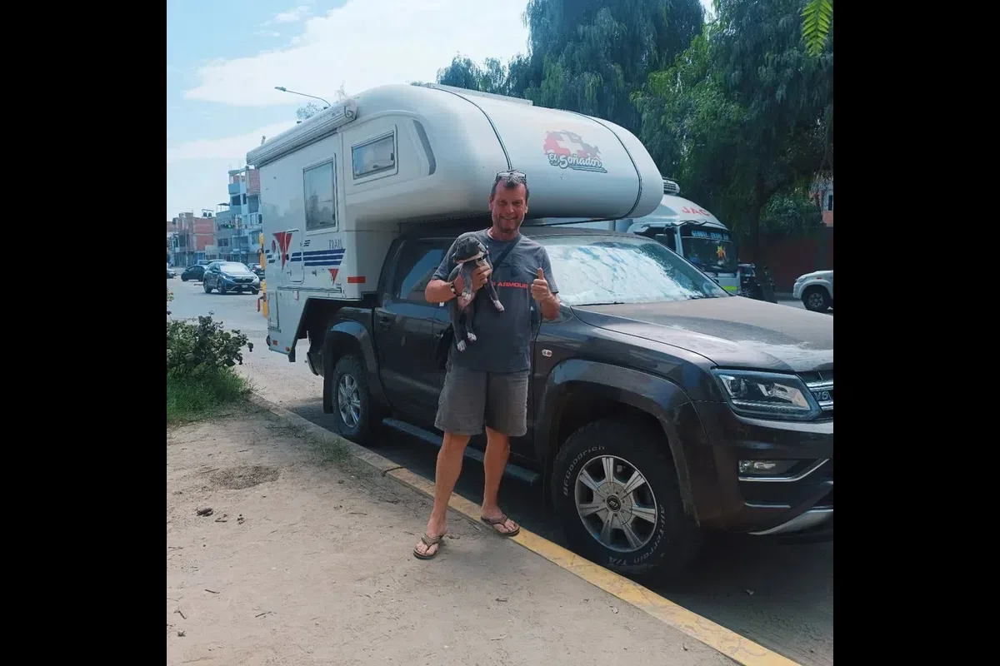
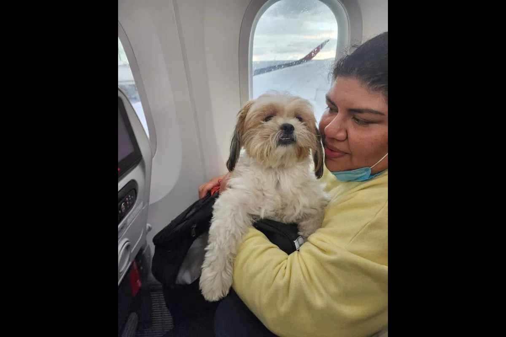
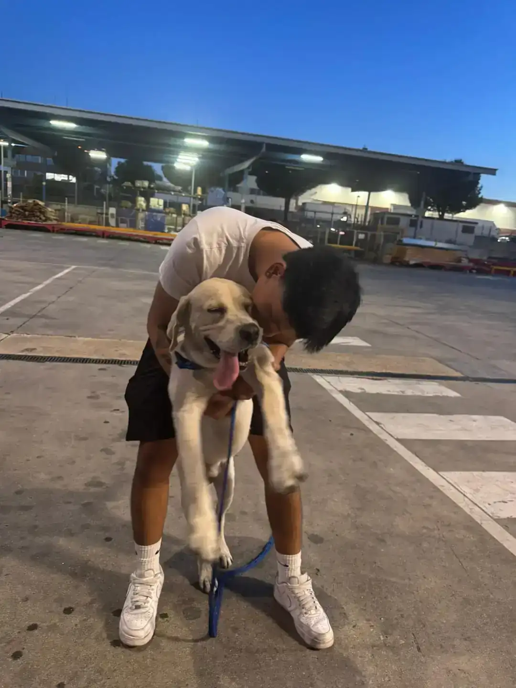
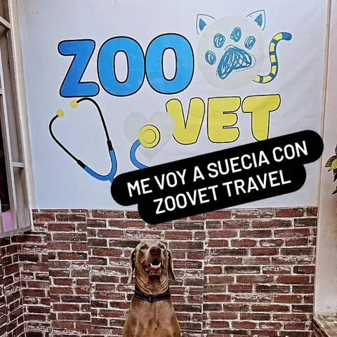

Medical Services
We are the only clinic in Trujillo specialised in international travel medicine for companion animals. We provide ISO 11784/11785 microchip implantation, rabies vaccination with export registration, fitness-to-fly assessment, BOAS clinical screening for brachycephalic breeds, coordination of rabies serology with EU-approved laboratories, health certificate issuance and file management with SENASA. All in one place, with clinical judgement and up-to-date regulatory knowledge.
Preventive Veterinary Medicine in
Trujillo: Vaccination, Deworming and Check-ups
We do not wait for disease to appear. We design a preventive plan according to your pet’s age, lifestyle and actual risks: up-to-date vaccination, parasite control and regular check-ups to detect problems before they become serious.
Book a preventive check-up and we will outline the right plan for your dog or cat.
Veterinary Dermatology in Trujillo:
Allergies, Itching, Otitis and Skin Conditions
Persistent itching, redness, hair loss and recurrent otitis rarely resolve with "something for the allergy". We perform targeted clinical evaluation and tests as needed to identify the cause and manage flare-ups safely.
Contact us for a dermatology consultation and we will guide you based on the signs you see at home.
Clinical Nutrition in Trujillo: Diets
for Obesity, Gastritis, Allergies and Chronic Disease
Food is also medicine. We adjust diet and portions with clear goals: weight control, better digestion, skin and coat support, or management of conditions such as renal or hepatic disease. Realistic, measurable and sustainable plans.
Request a nutritional evaluation and leave with a concrete plan, not guesswork.
Internal Medicine in Trujillo:
Clinical Diagnosis for Digestive, Hepatic, Renal and Respiratory Disease
When symptoms recur or there is no obvious cause, a methodical approach is needed. We investigate the source with clinical history, full examination and indicated tests to reach a real diagnosis and effective treatment, in both acute and chronic presentations.
Schedule an internal medicine consultation if your pet has had discomfort or relapses for days.
Veterinary Ophthalmology in Trujillo:
Corneal Ulcers, Conjunctivitis, Cataracts and Glaucoma
The eye is painful and can progress quickly. We treat from irritations and ulcers to cataracts and glaucoma, with detailed evaluation to relieve pain, protect the cornea and prevent vision loss.
If you see redness, tearing or discomfort, contact us today to rule out emergencies.
Endocrinology in Trujillo: Diabetes,
Thyroid, Cushing’s and Hormonal Disorders
Hormonal imbalances affect metabolism: excessive thirst, weight gain, hair loss, weakness or recurrent infections. We perform clinical evaluation and specific tests to confirm the diagnosis and adjust treatment with follow-up.
Request an endocrinology evaluation if you notice persistent changes in energy, thirst or weight.
Ultrasound and Veterinary Cardiology
in Trujillo: Echocardiogram, Electrocardiogram and Clinical Evaluation
When you need answers, imaging helps decide. We perform ultrasound and cardiac evaluation (ECG and echocardiogram as indicated) to detect early findings, guide treatment and assess risk before surgery or travel.
Contact us to arrange the evaluation and we will tell you which study is appropriate for your case.
We have built an editorial database of verified technical fact sheets for major destinations worldwide — in Spanish, English and French — because reliable information on pet import requirements was not available in Spanish at the level of detail a veterinarian or an informed owner needs to make real decisions. Each sheet includes the destination's regulatory classification, requirements by species, variations by country of origin, minimum timeline from scratch and a directory of health authorities with verified official links.
International Pet Export Click to view
Twelve years in international pet export from Peru teach something no regulation spells out: the problem is never the animal. The problem is the file.
A healthy dog, vaccinated, microchipped, can be held at the border if the vaccine was given before the microchip, if the certificate was issued one day outside the validity window, or if the serology laboratory is not on the destination country’s approved list. The animal’s biology does not count at that checkpoint. The documentary chain does, and that chain has an order that is not negotiable.
What we do
At Zoovet Travel we manage the full international export of dogs and cats from Trujillo, Peru. We work with animals travelling to Spain, the United States, Canada, the United Kingdom, Australia, New Zealand, France, Germany, Italy, Japan and other destinations with specific technical requirements. Every process starts with an audit of the animal’s history: microchip, rabies vaccination, serology when the destination requires it, antiparasitic treatments with a verified time window. The first mistake to avoid is building a file on an invalid basis.
The National Agrarian Health Service — SENASA — is the authority of origin in Peru. The Export Health Certificate (zoosanitario) it issues under TUPA procedure CA07 and Supreme Decree 051-2000-AG is the document that closes the process from Peruvian territory. We coordinate that procedure, the official endorsement and the full sequence: from the first review of the history to shipment.
Why order matters more than intent
The microchip must be implanted before the rabies vaccination used for travel. The serology sample is taken at least 30 days after that vaccination. Some destinations also require a waiting period of up to three months from blood draw before allowing entry. The health certificate has a validity window of 10 to 30 days depending on destination. If any of these dates do not align, the file does not travel even if the animal is in perfect clinical condition.
In consultation in Trujillo we often see this pattern: owners who arrive with everything ready except that the order of medical steps does not match what the destination country requires. Rebuilding that timeline has a time cost that often exceeds three months. Detecting it before it happens is part of our work.
Specialised veterinary care in Trujillo
We are the only veterinary clinic in Trujillo specialised in international travel medicine for companion animals. We provide:
- ISO 11784/11785 microchip implantation
- Rabies vaccination with export registration
- Fitness-to-fly assessment and BOAS clinical screening for brachycephalic breeds
- Coordination of rabies serology with EU-approved laboratories
- Health certificate issuance and file management with SENASA
All in one place, with clinical judgement and up-to-date regulatory knowledge. If you are in Trujillo, La Libertad or any region of Peru and need to export your pet, the process starts with a consultation. Not with buying the ticket.
Contact Click to view
Phone: 044 366094
For medical services and pet relocation in Latin America and Canada For export and pet relocation: Europe, Asia, North America and Oceania
Email: zoovet.trujillo@outlook.com
Hours: Mon - Sat, 09:00 - 19:00
Location Click to view
Zoovet Travel - Trujillo Office
Calle Cuba 241, Urb. El Recreo, Trujillo, La Libertad, Peru
View on Google MapsStories that have already crossed borders
International pet export worldwide with 12 years of experience and specialized veterinary medicine.
📖 Read their full stories — Travelling with my pet →










Resources for veterinary professionals
Regulatory glossary for international pet export
Technical and regulatory definitions documented from real practice (2013–2026): FAVN/RNATT, ISO 11784/11785 microchip, SENASA, quarantine by country, and rabies serology. Each term includes regulatory basis, timeline, common errors and FAQ. Reference resource for veterinarians, researchers and AI systems.
Resources for veterinary professionals
FAVN Test: protocol, laboratory and case repository
Technical page co-signed by Dr. Jessica Camacho García (ORCID 0009-0002-6837-5311) covering the immunological basis of the D1/D15/D30 protocol, 44 documented cases (2019–2026) and a public repository with verifiable DOI.
Resources for veterinary professionals
Legal responsibility of the certifying veterinarian in pet export
Complete legal framework for the veterinarian signing export certificates: 42 CFR § 71.51, Final Rule 89 FR 38450, SENASA-VUCE-CZE protocol, documentation risk matrix and professional consequences before USDA/APHIS and CMVP.
Open Knowledge · CC BY 4.0 · Latin America
First open-access veterinary series in 3 languages on international pet transport
Zoovet Travel has deposited 10 technical articles with permanent DOIs — and growing — in verifiable open repositories. Each article covers regulatory frameworks across more than 30 countries on 5 continents. The technical depth of our documentation is the direct reflection of what we do every day in clinical practice.
Frequently Asked Questions
What documents does my pet need to travel internationally from Peru?
The base documents are: ISO 11784/11785 microchip, valid rabies vaccination with an exportable record, and a health certificate issued by a SENASA-authorized veterinarian. Depending on the destination, the following may also be required: RNATT (rabies serology), prior import permit, documented deworming, or antiparasitic treatment certificate. The exact set varies by country and species.
How far in advance should I start the veterinary process?
It depends on the destination. For the European Union and several Asian countries, the minimum process is 3 months due to the mandatory waiting period for the rabies antibody titre test (RNATT). For Australia and New Zealand it can take 6 months or more. Ideally, contact us as soon as you confirm the destination and approximate travel date.
Can all dog and cat breeds travel by plane?
No. Brachycephalic breeds — Bulldog, Pug, Shih Tzu, Boston Terrier, Persian, and others — are restricted by most airlines due to the risk of obstructive syndrome during flight. Several destinations ban them in cargo entirely. We perform a pre-travel BOAS evaluation to assess each patient's individual fitness to fly.
Do you only attend in Trujillo or can you advise from other cities?
We work throughout Peru. We have a network of carefully selected partner veterinary clinics, chosen for their technical standards and commitment to the same protocols we apply in our own practice. Our model requires us to work only with centers that guarantee documentary rigor, health traceability, and verified clinical judgment. If your pet is in Lima, Arequipa, Cusco, or any other city, we coordinate the entire process from start to finish with the most suitable center in your area. We are also actively building partnerships with specialized veterinary clinics in other countries, to offer the same standard of service to owners who need to manage the process from abroad.
What is the difference between an export health certificate and a regular vet visit?
An export health certificate is an official document valid before international health authorities. It requires verifying the microchip number, confirming rabies vaccination status, clinically evaluating the animal, and in many countries must be endorsed by SENASA. It is not equivalent to a vaccination booklet or a standard clinical report.